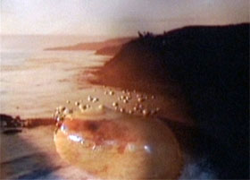

Still Dissolution

Siegfried A. Fruhauf – Austria 2013 – 3 min.
Siegfried A. Fruhauf – V: sixpackfilm
HD – No Dialogues
Still Dissolution measures the relationship between photography and film, standstill and motion, formation and dissolution, now and then, and material reality and illusion, and does so in an interplay of analogue and digital visual technologies. – Christa Blümlinger
Tuesday 14/10 10:30 p.m. Werkstattkino
Siegfried A. Fruhauf, born in 1976 in Austria. Studies of Experimental Visual Design in Linz, Austria. Since 2009 he has been teaching „Experimental film – an introduction“ at the University of Linz. Member of sixpackfilm in Vienna.
Films (selection): Blow-Up 2000 – Exposed 2001 – Frontale 2002 – Real Time 2002 – graas 2006 – Ground Control 2008 – Palmes d’Or 2009 – Schwere Augen 2011 – Exterior Extended 2013